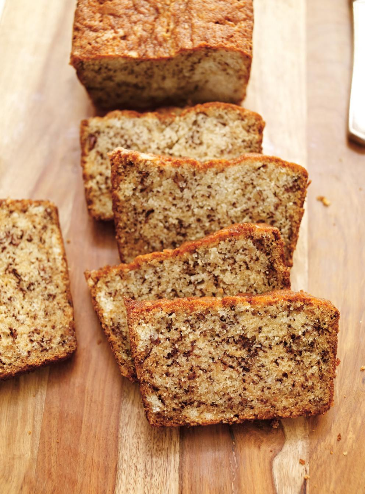

Banana Bread

Banana bread is a classic, comforting treat that’s incredibly easy to make and perfect for using up overripe bananas.
This quick bread combines mashed bananas, flour, sugar, butter, and eggs into a moist, sweet loaf that’s great
for breakfast, snacks, or dessert. The key to a rich banana flavor lies in using very ripe bananas—the riper, the
better. When bananas become covered in brown spots and turn extra soft, they’re at their peak for baking. Most
recipes also call for a bit of baking soda for lift, as well as a pinch of salt to balance the sweetness.
Many people enjoy adding extras like chocolate chips, nuts, or even a dash of cinnamon to elevate the flavor.
- 1 1/2 Cups (225g) All-Purpose Flower
- 1 Teaspoon (5g) Baking Powder
- 1 Teaspoon (5g) Baking Soda
- 1 1/4 Cups (310ml) Mashed Ripe Banana (3-4 Bananas)
- 1/2 Cup (125ml) Milk
- 1 Tablespoon (15ml) Lime Juice
- 1/2 Cup (115g) Unsalted Butter, Softened
- 1 Cup (210g) Sugar
- 1 Egg
- 1 Teaspoon (5ml) Vanilla Extract
- With the rack in the middle position, preheat the oven to 180 °C (350 °F). Butter a 23 x 13-cm (9 x 5-inch) loaf pan (a 1.5-litre (6-cup) capacity pan) and line with a strip of parchment paper, letting it hang over both sides.
- In a bowl, combine flour, baking powder and baking soda. Set aside.
- In another bowl, combine bananas, coconut milk and lime juice. Set aside.
- In a third bowl, cream butter and sugar with an electric mixer. Add egg and vanilla and beat until smooth. At low speed, add dry ingredients alternately with banana mixture.
- Pour into the loaf pan. Bake for about 1 hour or until a toothpick inserted in the centre of the cake comes out clean.
- Let cool on a wire rack before removing from the pan and slicing.